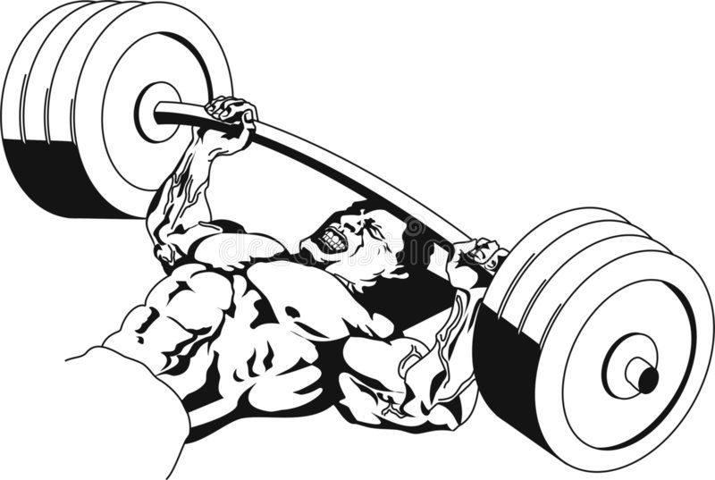

Exercise Description
Set up a barbell with chains hanging from each side. Perform a standard bench press by lowering the bar to your chest and then pressing it back up. The chains will add variable resistance, increasing the load as you press up.
Reps and Sets
Beginners: 3 sets of 10-15 reps
Weights: 35kg + 10kg chains per side
Rest time between each set: 2 min
Video Implementation